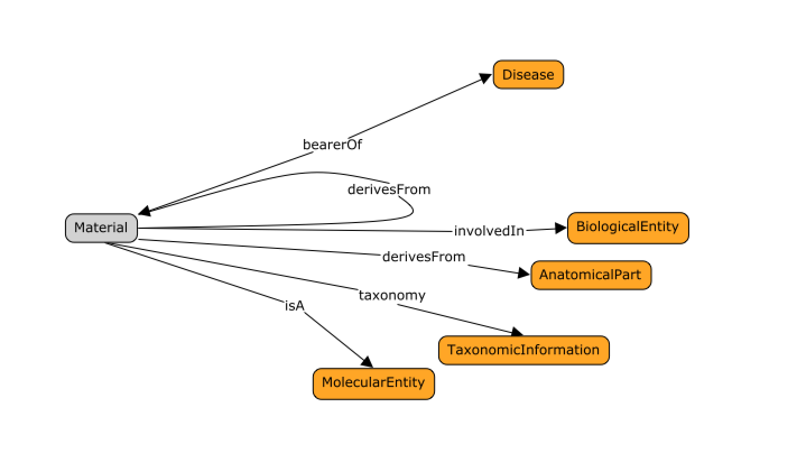
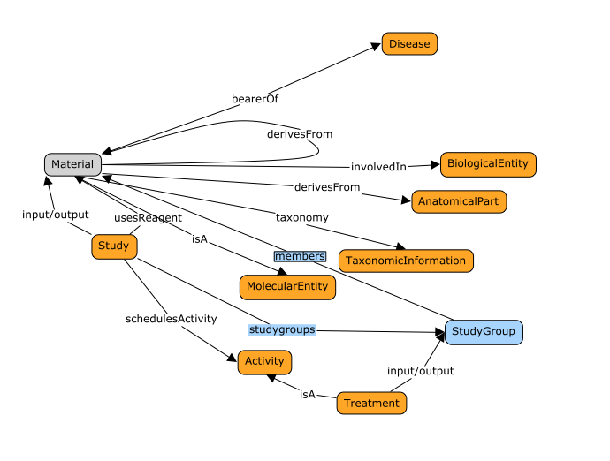

3. DATS Counting things:¶
A recurring capability query cases is that addressing the ability to assemble synthetic cohorts by interogating a collection of resources or datasets based on a certain charactieristics. It it therefore important to be able to accurately represent or summarize such information, as well as track relations between entities. This section aims to illustrate how DATS model provides the relevant mechanisms to do so.
3.1. Tracking patient and specimen relationships¶
Relationships between materials matter. It is therefore important for the model to be able to represent information assessing sample / specimen origin and patient identity. For instance, in the context of longitudinal studies, repeated measure designs, where samples are collected or variables measured several times over the course of a study. The figure below shows the main properties of the DATS Material object, with associations to key biologically relevent entities such as:

Owing to awareness in resources such DO, GO, UBERON, the ease in integration and compatibility with biomedical ontologies should be highlighted.
3.2. Groups and sizes in the context of studies¶
For all datasets characterising “signal”, the ability to identify, list and characterise study populations matters, as does the ability to capture descriptors for ‘treatment’ or ‘perturbations’.
As shown in the figure above, the Data Study object allows the declaration and identification of groups (DATS Study Groups) of related materials as well as list all their members. The objects can be qualified with group size properties, allowing direct querying.
Note: While DATS model has been designed to enable granular representation, it does necessary follow that such granularity should always be used. Also, it is often the case, primary resources can not provide information to the extent required to perform the query case introduced at the top of the section.